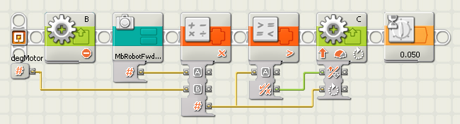

Sunday September 17, 2006
By Doug Frevert
First a definition of parameterized code. It is a style of programming where a few values are set at the beginning of a program. The values are parameters. Those values are easy to change and so, the program is easily changed.
Imagine a robot driving around a rectangular table. The robot will need to
a) go straight and
b) turn 90 degrees
four times.
One of the tedious parts of the process is figuring out how far the motors must go. If those values are entered on the individual Move blocks, the process is even more tedious. In parameterized code, the values are stored in variables at the beginning of the program. The variable values are then read and used where they are needed in the rest of the program.
It sounds more difficult than it is. Here is an example:
To get around my dinning room table counterclockwise when viewed from above: FirstLeg=4500, SecondLeg=3200, Pivot90Deg=410.
Or clockwise: FirstLeg=3600, SecondLeg=4900, Pivot90Deg= -425 (note the negative pivot value!)
NXT Memory required? 9.6K Considering the use of both Motor, Move, Variable, Logic and MyBlocks not much memory was used.
So is parameterized code common in FLL programming? Sadly, no. I do know that one team a couple of years ago used it extensively. The judges loved it.
All of which leads me to the starting point of this article. I keep building robots only to find they go backward instead of forward. It's not a big deal, I could just think backwards when I program, but I'm not that smart. And I'm much too lazy. So here's my solution, a MyBlock that is 1 or -1.
And here's where that value is used, a series of MyBlocks that do the obvious. They go forward/backward, spin or pivot.
Here's a pivot:

Now when I build a new robot and what had been forward is backward, all I need to change is one MyBlock and all my old programs work. (Ok, not all of them work, but a lot of them do.)
Oh, by the way -- there are better solutions for this problem. An FLL team is going to find one. This judge looks forward to it.
Doug